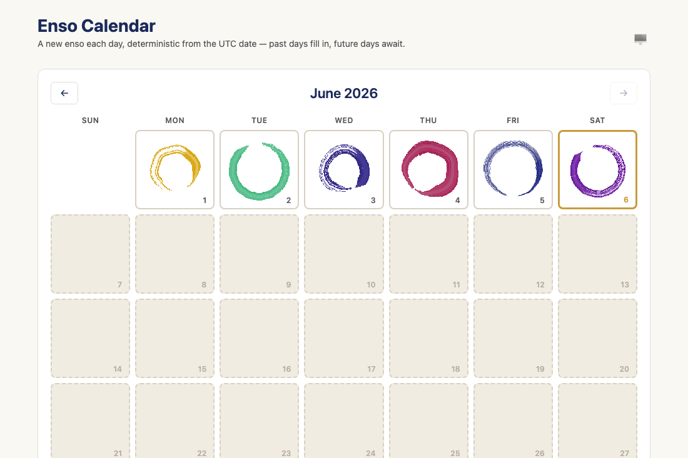
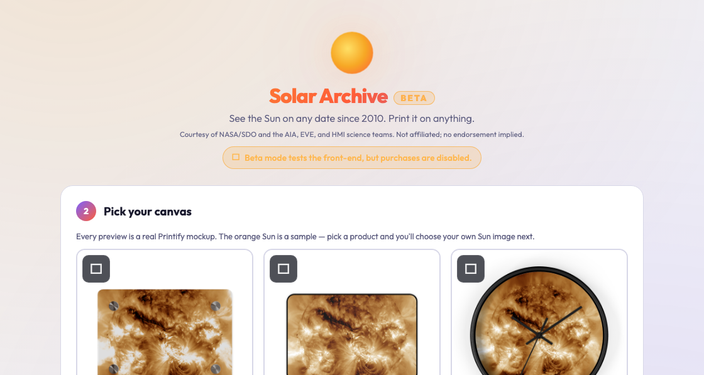
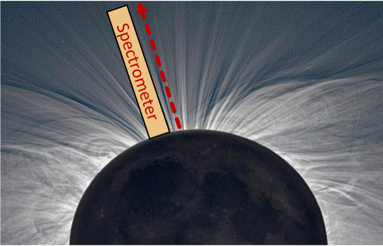
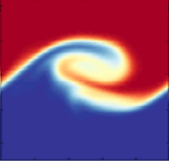
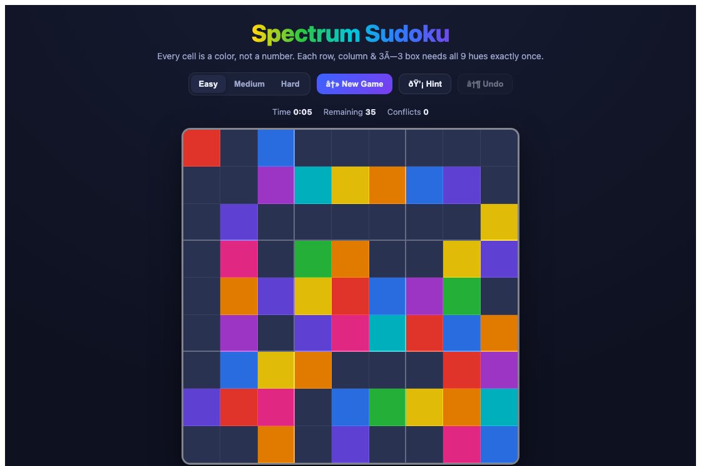
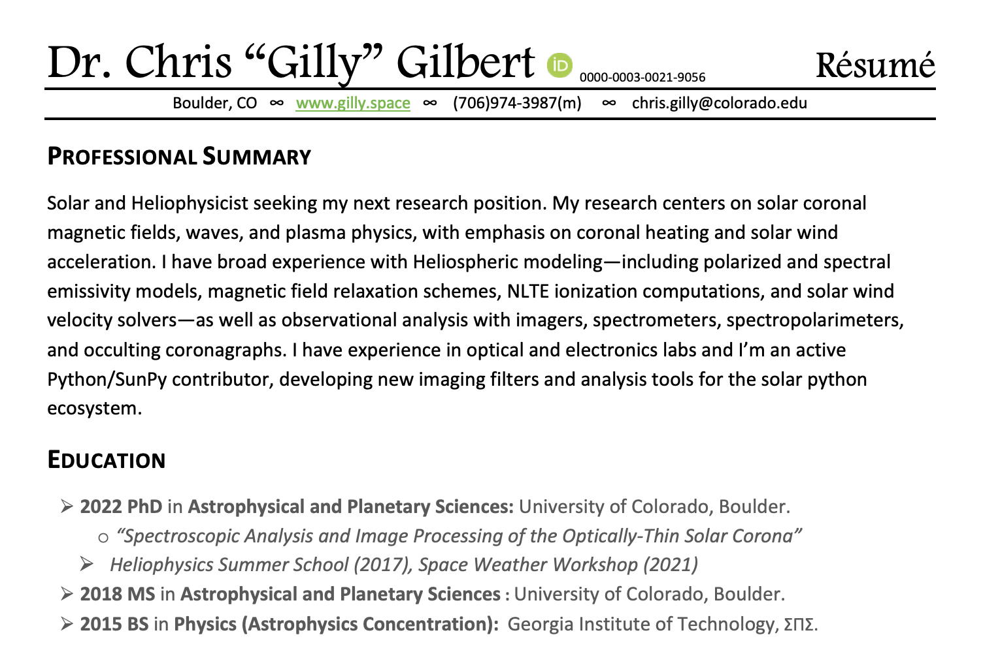
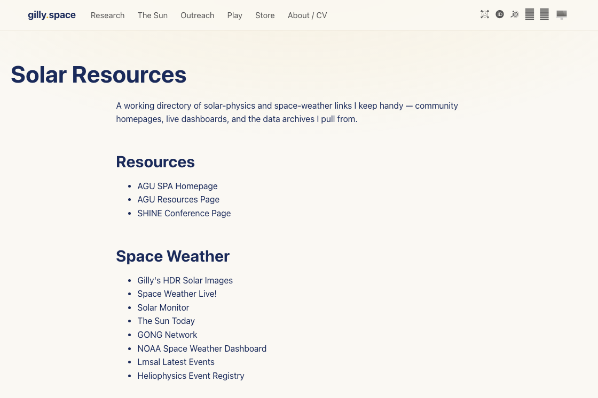

.png)
Live
The Sun, right now
Up-to-the-hour SDO imagery, radially equalized with my RHE method to reveal the faint corona.
Welcome to gilly.space
Heliophysicist
NorthWest Research Associates
I study the Sun and the wind it blows across the solar system — coronal heating, forward models, and validating what our instruments actually see — at NWRA in Boulder, Colorado. When I'm not doing that, I build small things that live on this domain. Look around.
Selected work
Live
Up-to-the-hour SDO imagery, radially equalized with my RHE method to reveal the faint corona.

Paper
Line-of-sight effects in coronal spectroscopy — my first paper, in ApJ.

Play · daily
A new AI-narrated brushstroke circle every day, deterministic from the date. Editable, too.

Prints
Fine-art prints of the Sun, processed the way I process it for science.
Explore

Active projects — PUNCH, RHEF, GHOSTS, DKIST.

Student projects, including the Kelvin–Helmholtz instability.
Public talks, planetarium shows, and “Space Is Full.”
The other half — songs, plays, and the occasional skit.


